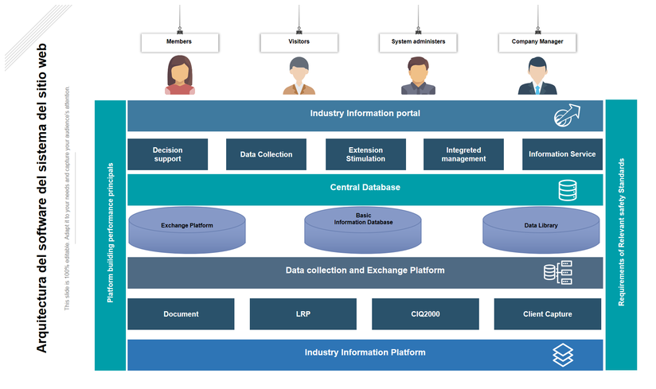
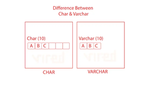
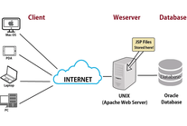
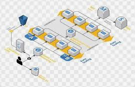

| Número | Término | Imagen | Concepto Inglés | Concepto Español |
|---|---|---|---|---|
| 1 | Application |  |
Program or software that performs a specific task. | Programa o aplicación que realiza una tarea específica. |
| 2 | Backup |  |
Backup copy of important files or information. | Copia de seguridad de archivos o información importante. |
| 3 | Computer |  |
Device used to process information. | Computadora utilizada para procesar información. |
| 4 | Database |  |
Data store where organized information is kept. | Base de datos donde se almacena información organizada. |
| 5 |  |
Electronic mail used to send and receive messages. | Correo electrónico utilizado para enviar y recibir mensajes. | |
| 6 | Firewall |  |
Security system that protects a network from unauthorized access. | Sistema de seguridad que protege una red de accesos no autorizados. |
| 7 | Gigabyte |  |
Unit of digital information storage. | Unidad de almacenamiento de información digital. |
| 8 | Hardware |  |
Physical components of a computer. | Componentes físicos de una computadora. |
| 9 | Internet |  |
Global network connecting millions of devices. | Red mundial que conecta millones de dispositivos. |
| 10 | Java |  |
Programming language used to develop applications. | Lenguaje de programación utilizado para desarrollar aplicaciones. |
| 11 | Keyboard |  |
Device used to enter data into a computer. | Teclado utilizado para ingresar datos en la computadora. |
| 12 | Laptop |  |
Portable computer. | Computadora portátil. |
| 13 | Mainframe (M) | A powerful computer used primarily by large organizations for critical applications and bulk data processing. | Una computadora potente utilizada principalmente por grandes organizaciones para aplicaciones críticas y procesamiento de datos masivos. | |
| 14 | Network (N) | A collection of computers and devices connected together to share resources and data. | Una colección de computadoras y dispositivos conectados entre sí para compartir recursos y datos. | |
| 15 | Open Source (O) | Software whose source code is made freely available to the public for modification and distribution. | Software cuyo código fuente se pone a disposición del público de forma gratuita para su modificación y distribución. | |
| 16 | Password (P) | A secret string of characters used to confirm a user's identity and access a system. | Una cadena secreta de caracteres utilizada para confirmar la identidad de un usuario y acceder a un sistema. | |
| 17 | Query (Q) | A request for information from a database table or a combination of tables. | Una solicitud de información a una tabla de base de datos o a una combinación de tablas. | |
| 18 | Router (R) | A networking device that forwards data packets between computer networks. | Un dispositivo de red que reenvía paquetes de datos entre redes informáticas. | |
| 19 | Software (S) | The programs and other operating information used by a computer. | Los programas y otra información operativa utilizada por una computadora. | |
| 20 | Table (T) |  |
A collection of related data held in a structured format within a database, consisting of columns and rows. | Una colección de datos relacionados mantenidos en un formato estructurado dentro de una base de datos, que consta de columnas y filas. |
| 21 | Upload (U) | Process of transmitting data from a local device to a remote server or system. | Proceso de transmitir datos desde un dispositivo local hacia un servidor o sistema remoto. | |
| 22 | URL (U) | The complete web address used to locate a specific resource on the Internet. | La dirección web completa utilizada para ubicar un recurso específico en Internet. | |
| 23 | Update (U) | A database command used to modify existing records within a table. | Un comando de base de datos utilizado para modificar los registros existentes dentro de una tabla. | |
| 24 | User Interface (U) | The visual and functional elements through which a user interacts with a computer system. | Los elementos visuales y funcionales a través de los cuales un usuario interactúa con un sistema informático. | |
| 25 | VARCHAR (V) |  |
A data type in databases used to store character strings of variable length. | Un tipo de datos en bases de datos utilizado para almacenar cadenas de caracteres de longitud variable. |
| 26 | Validation (V) | The process of ensuring that input data is correct, secure, and fits a specific format. | El proceso de asegurar que los datos de entrada sean correctos, seguros y se ajusten a un formato específico. | |
| 27 | Virtualization (V) | Technology that allows running multiple virtual computers on a single physical hardware. | Tecnología que permite ejecutar varias computadoras virtuales en un único hardware físico. | |
| 28 | Virus | Malicious software designed to damage or alter a computer's operation. | Software malicioso diseñado para dañar o alterar el funcionamiento de una computadora. | |
| 29 | Web Server (W) |  |
Software or hardware that stores webpage files and delivers them to users over the Internet. | Software o hardware que almacena los archivos de páginas web y los entrega a los usuarios a través de Internet. |
| 30 | Wi-Fi | Technology for wireless connection to a local network and the Internet. | Tecnología de conexión inalámbrica a una red local y a Internet. | |
| 31 | Wireless (W) | Communication system that connects devices without using physical, conductive cables. | Sistema de comunicación que conecta dispositivos sin utilizar cables conductores físicos. | |
| 32 | Workstation (W) | A high-performance computer designed for technical, professional, or scientific work. | Una computadora de alto rendimiento diseñada para trabajos técnicos, profesionales o científicos. | |
| 34 | XML (X) | A markup language used to store and transport data in a readable format for both humans and machines. | Un lenguaje de marcado utilizado para almacenar y transportar datos en un formato legible tanto para humanos como para máquinas. | |
| 35 | XSS - Cross-Site Scripting (X) | A security vulnerability where malicious scripts are injected into otherwise benign and trusted websites. | Una vulnerabilidad de seguridad donde se inyectan scripts maliciosos en sitios web que de otro modo serían confiables. | |
| 36 | Yottabyte (Y) | A unit of digital data storage capacity equal to 10 to the 24th power bytes. | Una unidad de capacidad de almacenamiento de datos digitales equivalente a 10 a la 24 potencia bytes. | |
| 37 | Zip |  |
File format used to compress data and save storage space. | Formato de archivo utilizado para comprimir datos y ahorrar espacio de almacenamiento. |